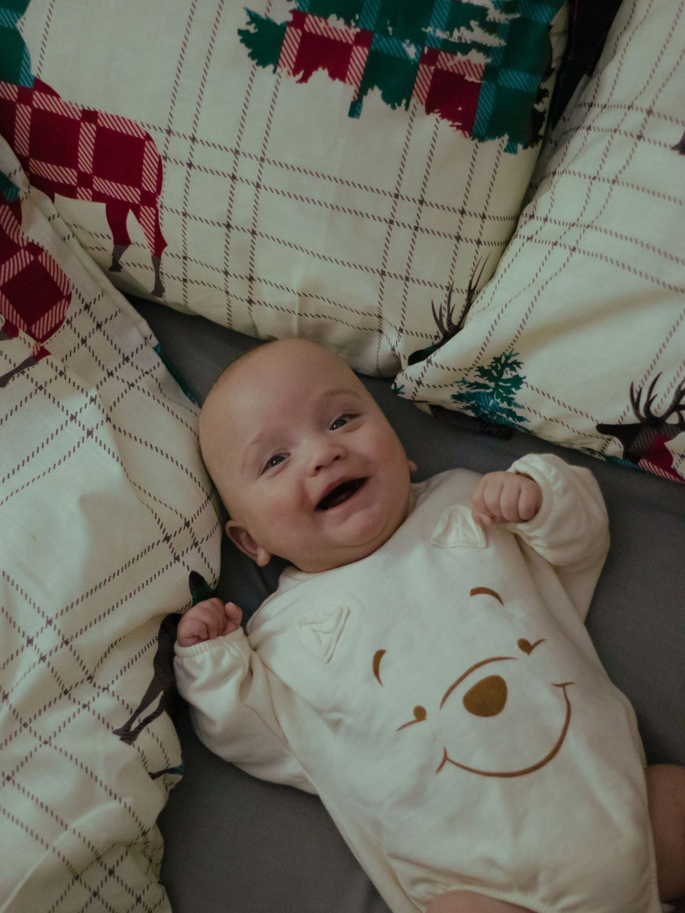

Not at all! Please don't stress about cleaning or clutter. All I need is a bit of clear space near a bright window—usually the main bedroom, nursery, or living room. I will easily find the best light angles and frame out any unwanted clutter during the shoot.


LIFESTYLE AT-HOME BABY PHOTOGRAPHY
Capturing honest connection and fleeting moments in your safe haven
Stories From Inside Your Walls
At-Home Lifestyle Baby Sessions
There is something deeply authentic about photographing your baby in the place where they take their very first breaths, smiles, and steps. A home isn't just a backdrop; it is a living chest of memories. My at-home baby sessions are designed to document your family’s real rhythm—the quiet nursing moments, the gentle rocking by the nursery window, and the raw, unscripted expressions of love that happen when you simply forget the camera is there.
You don't need to pack a heavy diaper bag, rush through traffic, or worry about keeping your baby on a rigid timeline. By bringing the session to your safe haven, your little one stays completely comfortable in their familiar environment. We let the baby lead the way. If they need to rest, eat, or just be held closely, we pause. This approach creates a stress-free experience that captures the genuine atmosphere of these fleeting early months.
No elaborate studio lighting or rigid poses are required. Instead, we use the beautiful natural light filtering through your windows to document your newborn or older baby just as they are. These photographs will serve as an honest visual legacy—reminding you not only of how tiny their fingers were, but exactly what it felt like to welcome them into your own personal sanctuary.


Having Patrice come to our home was the best decision we made. We didn't have to stress about traveling with a one-week-old baby, and the entire session felt like a relaxed morning spent with a friend. The photos are pure magic!



Frequently Asked Questions
Comfort is key for lifestyle sessions. Soft fabrics, neutral, solid tones, or warm earth tones look beautiful. Avoid big logos, heavy patterns, or overly formal clothing so that the focus remains entirely on your raw connections.
Fussy babies are totally normal! At-home sessions are completely baby-led. We have plenty of time built in to stop for a diaper change, a quick soothing cuddle, or a relaxed feeding session. Those realistic comforting moments often make the most beautiful portraits.

Your Experience
Discover